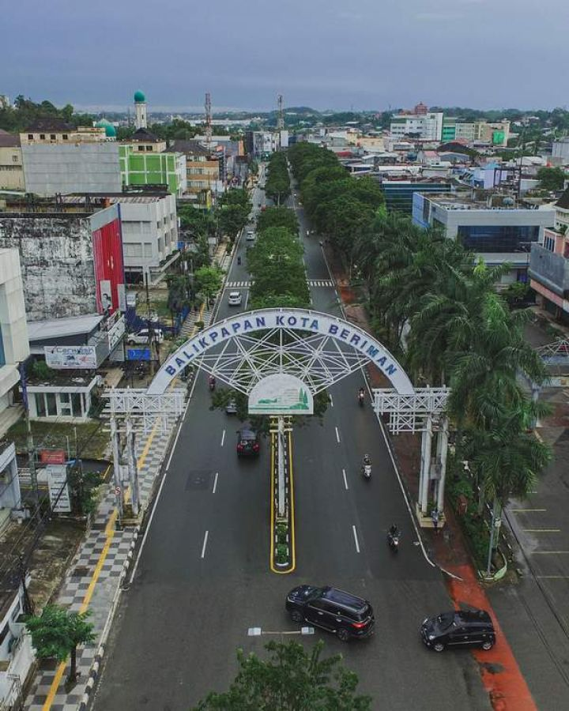

Balikpapan
Kota Balikpapan tidak bisa dipisahkan dengan Minyak yaitu lebih tepatnya dengan sumur minyak Mathilda, sumur pengeboran perdana pada tanggal 10 Februari 1897 di kaki gunung Komendur di sisi timur Teluk Balikpapan. Penamaan sumur minyak ini berasal dari nama anak JH Menten dari JH Menten dan Firma Samuel & Co sebagai pemenang hak konsesi pengeboran di yang ditunjuk pemerintah Hindia Belanda yang telah mengontrak Balikpapan dari Kesultanan Kutai.
